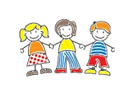
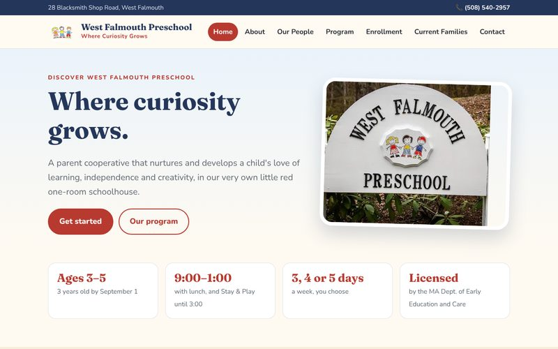
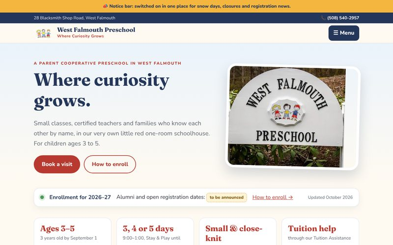

Webpage redesign
Our WordPress site as it is today.
Visit ↗
Every page of today's site, rebuilt to be cleaner, faster and easy to read on a phone.
Open version 1 →
Adds tour booking, one clear enrollment page, a Parent Hub and a Give page.
Open version 2 →The board shares one AI account. Anyone on the board can describe a change in plain English, and the AI makes it.
"Post the 2026–27 tuition rates and the registration dates."
It edits the pages, keeping the design consistent.
The change appears on a private staging site first, for the board to check.
When it looks right, it goes live on westfalmouthpreschool.org.
| Today | Going forward | |
|---|---|---|
| Hosting | Paid outside company | Free (Cloudflare Pages and GitHub) |
| Making a change | Log into WordPress or wait for the vendor | Ask the AI, in minutes |
| Checking first | Changes go straight live | Preview on a staging site, then ship |
| Mistakes | Hard to undo | Every version saved; undo in one step |
| Security | Plugins and updates to manage | Built in; nothing to patch |
| Ownership | Tied to the vendor | The board owns every account |